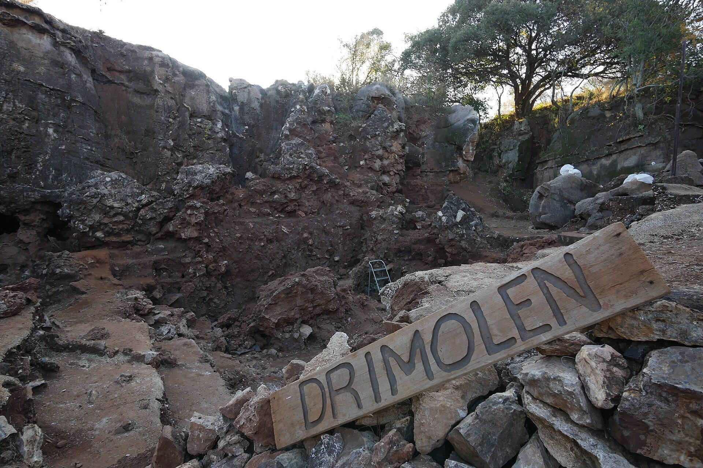

Fóssil de Drimolen reforça que o Homo erectus já estava na África do Sul há cerca de 2 milhões de anos
Um crânio adulto de cerca de 2 milhões de anos, achado na pedreira de Drimolen, adiciona evidência de que a espécie existia lá cerca de 200 mil anos antes do que se supunha. O resultado se apoia em um único fóssil adulto.

Um fóssil adulto de Homo erectus com cerca de 2 milhões de anos, achado no sítio de Drimolen, na África do Sul, adiciona evidência de que a espécie já vivia na região cerca de 200 mil anos antes do que se acreditava. O estudo, de Jesse M. Martin, A. B. Leece, Stephanie Baker, Andy I. R. Herries e David S. Strait, descreve 18 fósseis de hominíneos do sítio e saiu na Annals of Human Biology (2026; 53(1); DOI 10.1080/03014460.2026.2725046). Participam instituições como a La Trobe University (Austrália), a Universidade de Joanesburgo, a Universidade de Witwatersrand e a Universidade Washington. O texto em que nos baseamos é um comunicado da La Trobe.
O que foi descrito
Drimolen fica no "Berço da Humanidade" sul-africano. O sítio foi descoberto em 1992 e escavado até 2019, e muitos fósseis recuperados nunca tinham sido descritos formalmente. Os 18 novos foram atribuídos ao Homo erectus e ao Paranthropus robustus. O novo espécime adulto de H. erectus (DNH 127) tem "cerca de 2 milhões de anos", e o comunicado não informa o método de datação. O fóssil original de Drimolen (DNH 134) era de uma criança de 2 a 4 anos, cuja forma adulta era incerta, e o novo espécime preenche essa lacuna. Para comparação, H. erectus adultos de Dmanisi, na Geórgia, têm cerca de 1,8 milhão de anos.
O que muda
Segundo Martin, o H. erectus é a primeira espécie de hominíneo que os pesquisadores em geral concordam que pertence ao nosso gênero, Homo, e provavelmente é ancestral direta dos humanos modernos (tradução livre). Martin sugere, como possibilidade, que o cérebro maior e os molares menores possam estar ligados a comer mais carne. Já o P. robustus desenvolveu, entre cerca de 2,0 e 1,8 milhão de anos atrás, dentes maiores e músculos de mastigação mais fortes, enquanto o cérebro ficou pouco maior que o de um chimpanzé. A população de Drimolen já tinha sido proposta como subespécie à parte (P. robustus ukusa), e os novos fósseis dão mais apoio a isso. Há 2 milhões de anos, o P. robustus superava o H. erectus em Drimolen por mais de 10 para 1.
Para entender o contexto
O Homo erectus é uma espécie de humano antigo que apareceu há cerca de 2 milhões de anos e foi a primeira a se espalhar para fora da África, chegando à Ásia e à Europa. Seus fósseis mais antigos fora da África, em Dmanisi, na Geórgia, têm cerca de 1,8 milhão de anos, e há vestígios na China e na Indonésia.
A região de Drimolen fica na área conhecida como Berço da Humanidade, perto de Joanesburgo, patrimônio mundial da UNESCO, que reúne algumas das jazidas fósseis mais importantes sobre a evolução humana. Recuar a presença do Homo erectus na África do Sul em cerca de 200 mil anos ajuda a entender como a espécie surgiu e onde, embora a interpretação dependa de datação e de comparação com outros fósseis.
Termos úteis
- Homo erectus: Espécie de humano antigo que viveu de cerca de 2 milhões a poucas centenas de milhares de anos atrás.
- Berço da Humanidade: Área de jazidas fósseis na África do Sul, patrimônio mundial da UNESCO.
- Hominínio: Grupo que inclui os humanos e seus ancestrais depois da separação da linhagem dos chimpanzés.
As ressalvas
O comunicado chama a evidência sobre o H. erectus de "mais forte" e de "confirmação adicional", e não de conclusiva, e ela se baseia em um único fóssil adulto. Fósseis de hominíneos são raros, e por isso os pesquisadores muitas vezes precisam fazer estimativas sobre partes que faltam no registro. O texto descreve o DNH 127 ora como "segundo fragmento de crânio", ora como "fragmento de crânio adulto", sem esclarecer se é craniano ou mandibular. A ligação com a alimentação à base de carne é só uma possibilidade, e a ideia de "evolução em ação" é a interpretação do comunicado para diferenças entre fósseis ao longo de cerca de 200 mil anos.
Gostou? Receba as próximas.
As histórias que não chegam em português, uma vez por semana, em 3 minutos de leitura. Sem spam.
Ao assinar, você concorda em receber a newsletter (com confirmação e link para sair em todo envio) e, conforme a política de privacidade, com o uso dos seus dados para medição e anúncios.